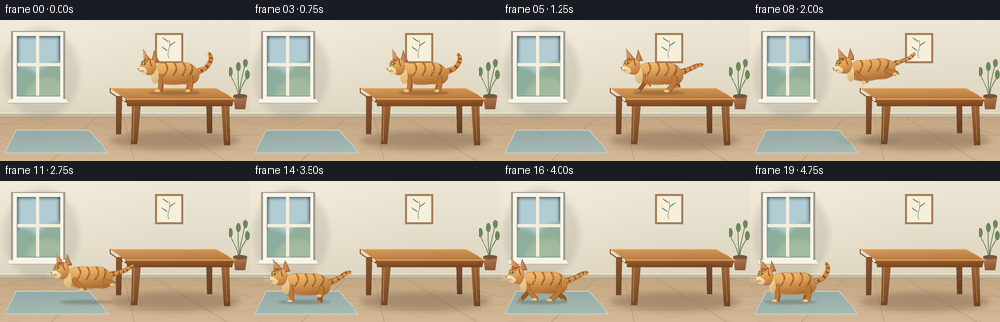
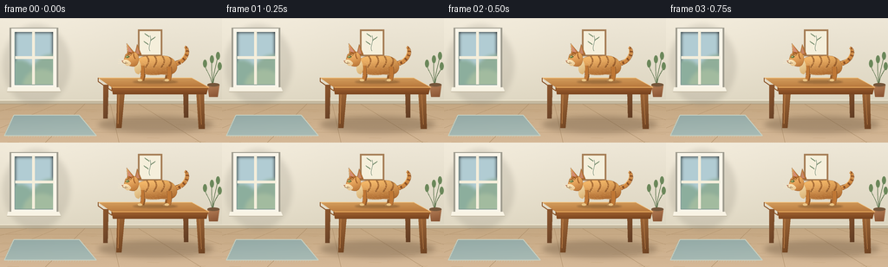

CODING AGENTS AS PIXEL WORLD MODELS
traex/GPT-6.1-Sol · dynamic_spatial_relationship_0011
点击播放 · 原生 RGB 像素
逐轮保存的候选
回放视频、检查图与代码变化。
每份候选均可单独播放。实际图片检查记录在下方工具轨迹中。
候选 01播放与检查图
点击播放 · 原生 RGB 像素


展开代码变化
--- 上一保存版本
+++ 本次保存版本
@@ -0,0 +1,254 @@
+from pathlib import Path
+import math
+import numpy as np
+from PIL import Image, ImageDraw, ImageFilter
+import artifact_io
+
+ROOT = Path(__file__).resolve().parent
+W,H,S=256,144,4
+rng=np.random.default_rng(31)
+
+def pts(p): return [(float(x)*S,float(y)*S) for x,y in p]
+def bezier(p,n=28):
+ p=np.array(p,float); t=np.linspace(0,1,n)[:,None]
+ if len(p)==4: q=(1-t)**3*p[0]+3*(1-t)**2*t*p[1]+3*(1-t)*t*t*p[2]+t**3*p[3]
+ else: q=(1-t)**2*p[0]+2*(1-t)*t*p[1]+t*t*p[2]
+ return [tuple(x) for x in q]
+def shape(d,p,fill): d.polygon(pts(p),fill=fill)
+def line(d,p,fill,width=1): d.line(pts(p),fill=fill,width=max(1,round(width*S)),joint='curve')
+def ellipse(d,b,fill,outline=None,width=1): d.ellipse(tuple(float(v)*S for v in b),fill=fill,outline=outline,width=max(1,round(width*S)))
+def curve(d,p,fill,width=1): line(d,bezier(p),fill,width)
+def overlay(im,mask,color,alpha=255):
+ layer=Image.new('RGB',im.size,color)
+ if alpha!=255: mask=mask.point(lambda v: round(v*alpha/255))
+ im.paste(layer,(0,0),mask)
+def softellipse(im,b,color,blur=2,alpha=70):
+ mask=Image.new('L',im.size); ellipse(ImageDraw.Draw(mask),b,alpha)
+ mask=mask.filter(ImageFilter.GaussianBlur(blur*S)); overlay(im,mask,color)
+
+def shaded(im,p,top,bottom,center=None,shade=0,outline=None):
+ mask=Image.new('L',im.size); shape(ImageDraw.Draw(mask),p,255)
+ xs=[x for x,y in p]; ys=[y for x,y in p]
+ x0=max(0,int(min(xs)*S)-2); x1=min(W*S,int(max(xs)*S)+3)
+ y0=max(0,int(min(ys)*S)-2); y1=min(H*S,int(max(ys)*S)+3)
+ if x1<=x0 or y1<=y0:return mask
+ yy,xx=np.mgrid[y0:y1,x0:x1]; f=np.clip((yy/S-min(ys))/(max(ys)-min(ys)+1e-6),0,1)
+ # Side illumination adds volume without changing shape.
+ f=np.clip(f*.82+((xx/S-min(xs))/(max(xs)-min(xs)+1e-6))*.18,0,1)
+ arr=np.array(top)[None,None,:]*(1-f[:,:,None])+np.array(bottom)[None,None,:]*f[:,:,None]
+ if center is not None:
+ cx,cy,rx,ry=center
+ light=np.exp(-((xx/S-cx)/rx)**2-((yy/S-cy)/ry)**2)
+ arr+=light[:,:,None]*shade
+ im.paste(Image.fromarray(np.clip(arr,0,255).astype(np.uint8)),(x0,y0),mask.crop((x0,y0,x1,y1)))
+ if outline: line(ImageDraw.Draw(im),p+[p[0]],outline,.35)
+ return mask
+
+def background():
+ yy,xx=np.mgrid[0:H*S,0:W*S]; y=yy/S; x=xx/S
+ noise=rng.normal(0,.48,(H*S,W*S))
+ wall=np.zeros((H*S,W*S,3),float)
+ for c,(a,b) in enumerate(zip((238,231,215),(211,203,180))): wall[:,:,c]=a+(b-a)*y/144
+ sunlight=np.exp(-((x-45)/90)**2-((y-45)/77)**2)
+ wall+=sunlight[:,:,None]*6+noise[:,:,None]
+ floor=y>=98
+ floorarr=np.stack((196+17*(y-98)/46,167+17*(y-98)/46,130+21*(y-98)/46),2)
+ floorarr+=noise[:,:,None]*1.0
+ wall=np.where(floor[:,:,None],floorarr,wall)
+ im=Image.fromarray(np.clip(wall,0,255).astype(np.uint8)); d=ImageDraw.Draw(im)
+ # Quiet plaster wall, low moulding, natural wood floor.
+ shape(d,[(0,95),(256,95),(256,99),(0,99)],(197,185,160))
+ line(d,[(0,95),(256,95)],(246,238,217),.7)
+ line(d,[(0,99),(256,99)],(164,148,118),.6)
+ for end in [-140,-40,52,137,232,340,450]:
+ line(d,[(122+(end-122)*.34,99),(end,144)],(175,145,108),.45)
+ for py in [106,117,132]:
+ line(d,[(0,py),(256,py)],(184,153,116),.35)
+ for i in range(38):
+ px=float(rng.uniform(0,256)); py=float(rng.uniform(101,144)); lng=float(rng.uniform(7,23))
+ curve(d,[(px,py),(px+lng*.4,py-.6),(px+lng*.7,py+.7),(px+lng,py)],(193,162,123),.25)
+ # Window trim and cool sky create readable warm/cool contrast.
+ softellipse(im,(3,7,81,101),(117,112,99),2.8,45)
+ d=ImageDraw.Draw(im)
+ shape(d,[(11,11),(67,11),(67,84),(11,84)],(158,155,142))
+ shape(d,[(13,12),(65,12),(65,82),(13,82)],(249,245,233))
+ shape(d,[(17,16),(61,16),(61,77),(17,77)],(175,201,205))
+ # Blurred exterior silhouettes, painted only from geometry.
+ outdoor=Image.new('RGB',im.size,(0,0,0)); od=ImageDraw.Draw(outdoor)
+ shape(od,[(17,16),(61,16),(61,77),(17,77)],(177,204,211))
+ ellipse(od,(2,48,43,96),(140,174,157)); ellipse(od,(34,42,89,94),(144,174,153))
+ ellipse(od,(26,59,70,100),(162,187,159))
+ outdoor=outdoor.filter(ImageFilter.GaussianBlur(2*S))
+ m=Image.new('L',im.size); shape(ImageDraw.Draw(m),[(17,16),(61,16),(61,77),(17,77)],255)
+ im.paste(outdoor,(0,0),m);d=ImageDraw.Draw(im)
+ shape(d,[(37,15),(40,15),(40,78),(37,78)],(244,238,219))
+ shape(d,[(16,44),(62,44),(62,47),(16,47)],(244,238,219))
+ line(d,[(17,16),(17,77),(61,77)],(128,153,150),.7)
+ shape(d,[(9,80),(68,80),(70,85),(8,85)],(248,243,228))
+ line(d,[(8,85),(70,85)],(192,182,159),.65)
+ # A single tasteful botanical print, well behind the action.
+ shape(d,[(159,13),(187,13),(187,44),(159,44)],(165,125,85))
+ shape(d,[(161,15),(185,15),(185,42),(161,42)],(245,239,219))
+ curve(d,[(173,38),(170,33),(176,27),(173,20)],(98,125,106),.6)
+ for cx,cy,sg in [(171,31,-1),(174,26,1),(172,22,-1)]:
+ q=bezier([(cx,cy),(cx+sg*8,cy-5),(cx+sg*6,cy-6),(cx,cy-1)])
+ shape(d,q,(119,142,111))
+ # Small potted plant at the far edge of the room.
+ for end in [(244,47),(251,43),(236,52),(253,55)]:
+ curve(d,[(246,83),(244,66),(end[0],end[1]+8),end],(96,119,81),.8)
+ ellipse(d,(end[0]-2,end[1]-4,end[0]+2.7,end[1]+5),(108,136,91))
+ shaded(im,[(239,77),(253,77),(251,91),(241,91)],(179,125,85),(136,83,51))
+ d=ImageDraw.Draw(im);ellipse(d,(239,75,253,79),(116,86,59))
+ # Pale woven runner marks the landing area, not the tabletop.
+ rug=[(16,112),(91,112),(111,136),(5,136)]
+ shaded(im,rug,(147,169,166),(170,188,182))
+ d=ImageDraw.Draw(im);line(d,rug+[rug[0]],(199,208,193),1)
+ for py in np.arange(115,135,2): line(d,[(14-(py-112)*.39,py),(91+(py-112)*.82,py)],(154,177,170),.26)
+ for px in np.arange(10,105,3): line(d,[(px,136),(px-1,138)],(202,205,185),.4)
+ # Table cast shadow and four distinctly separated tapered legs.
+ softellipse(im,(113,113,246,133),(88,68,47),3,83)
+ shaded(im,[(119,77),(125,77),(124,116),(119,116)],(142,88,47),(104,66,39))
+ shaded(im,[(211,76),(217,76),(217,115),(212,115)],(138,85,46),(95,60,35))
+ shaded(im,[(135,82),(144,82),(140,127),(134,127)],(162,105,56),(111,67,34))
+ shaded(im,[(226,82),(235,81),(236,128),(229,128)],(164,107,58),(109,66,34))
+ d=ImageDraw.Draw(im)
+ line(d,[(137,88),(136,122)],(191,130,74),.7);line(d,[(230,88),(232,123)],(196,134,77),.6)
+ shaded(im,[(129,80),(240,80),(238,88),(130,88)],(162,99,48),(117,65,30))
+ shaded(im,[(113,69),(221,69),(241,80),(129,80)],(218,165,99),(182,116,57))
+ d=ImageDraw.Draw(im)
+ line(d,[(113,69),(221,69),(241,80)],(244,196,129),.65)
+ line(d,[(129,80),(241,80)],(249,191,110),.65)
+ line(d,[(113,69),(113,73),(129,84),(129,80)],(135,81,39),.9)
+ for i in range(7):
+ py=70+i*1.35
+ curve(d,[(116+i*1.5,py),(150,py+.4),(200,py-.7),(222+i*2.1,py)],(183,125,65),.32)
+ curve(d,[(186,73),(191,71),(200,72),(202,74)],(176,116,61),.35)
+ curve(d,[(186,73),(190,75),(200,75),(202,74)],(176,116,61),.35)
+ return im
+
+# Local cat geometry points face left. Every frame preserves identity and coat.
+fur_speckles=[(float(rng.uniform(-21,24)),float(rng.uniform(-28,-6)),float(rng.uniform(.7,1.8))) for _ in range(230)]
+def cat(im,x,b,phase=0,mode='idle',lean=0):
+ moving=mode=='run'; flying=mode=='jump'
+ def P(px,py):return (x+px,b+py+lean*px)
+ def PP(p):return [P(a,c) for a,c in p]
+ d=ImageDraw.Draw(im)
+ # Tail is attached to the rump and sways with locomotion.
+ sway=math.sin(phase)*2 if moving else math.sin(phase)*1.1
+ if flying: tail=bezier(PP([(20,-20),(36,-25),(39,-24),(47,-31)]),40)
+ elif moving: tail=bezier(PP([(21,-20),(36,-22),(42,-32+sway),(47,-29+sway)]),40)
+ else: tail=bezier(PP([(21,-20),(37,-21),(42,-37+sway),(35,-40+sway)]),40)
+ for k in range(len(tail)-1):
+ width=5.7-3.1*k/(len(tail)-1)
+ line(d,[tail[k],tail[k+1]],(151,90,40),width+.5)
+ for k in range(len(tail)-1):
+ width=5.1-3*k/(len(tail)-1)
+ line(d,[tail[k],tail[k+1]],(208,137,66),width)
+ for k in range(6,len(tail)-2,7):
+ line(d,[tail[k],tail[min(k+2,len(tail)-1)]],(137,79,37),4.7-2.6*k/len(tail))
+ curve(d,[tail[0],tail[12],tail[23],tail[-1]],(238,178,102),.65)
+ # Articulated legs: far pair first, near pair over the body.
+ def limb(root,near,front):
+ offset=0 if front else math.pi
+ if moving:
+ a=phase+offset+(math.pi if not near else 0)
+ footx=root-8*math.cos(a)
+ lif=max(0,math.sin(a))*6
+ footy=-lif
+ knee=(root+3*math.cos(a),-8-lif*.25)
+ elif flying:
+ footx=root+(10 if front else 11); footy=-5 if front else -10
+ knee=(root+3,-12)
+ else:
+ footx=root-1;footy=0;knee=(root+1,-7)
+ start=(root,-18 if front else -17)
+ path=bezier(PP([start,knee,(footx+1,footy-4),(footx,footy-1)]))
+ col=(191,119,53) if near else (148,89,39)
+ line(d,path,(124,78,39),4.4 if front else 5.4)
+ line(d,path,col,3.8 if front else 4.8)
+ px,py=P(footx-1.0,footy-1)
+ ellipse(d,(px-3.2,py-1.6,px+1.8,py+1.1),(235,197,134) if near else (179,134,82))
+ if near:
+ line(d,[P(footx-2,footy-.2),P(footx-2,footy+.9)],(167,125,75),.4)
+ return (root,knee,footx,footy)
+ limb(15,False,False);limb(-13,False,True)
+ # Organic back, chest, tummy, and haunch silhouette.
+ body=[]
+ for c in [[(-22,-20),(-20,-29),(-9,-30),(2,-29)],[(2,-29),(16,-31),(24,-27),(26,-18)],[(26,-18),(27,-9),(19,-6),(8,-8)],[(8,-8),(-2,-6),(-17,-7),(-21,-15)],[(-21,-15),(-24,-17),(-24,-19),(-22,-20)]]:
+ body+=bezier(PP(c))
+ mask=shaded(im,body,(244,185,103),(163,96,42),center=(*P(-7,-23),23,9),shade=12,outline=(155,92,42))
+ # Pale underside is softly integrated with the orange coat.
+ cream=Image.new('L',im.size);cd=ImageDraw.Draw(cream)
+ belly=bezier(PP([(-20,-14),(-13,-5),(5,-7),(16,-8)]))+bezier(PP([(16,-8),(7,-2),(-15,-1),(-20,-14)]))
+ shape(cd,belly,180);cream=cream.filter(ImageFilter.GaussianBlur(.7*S))
+ cm=np.minimum(np.asarray(cream),np.asarray(mask)).astype(np.uint8);overlay(im,Image.fromarray(cm),(242,214,161))
+ # Tabby markings curve around the ribcage.
+ markings=Image.new('RGBA',im.size);md=ImageDraw.Draw(markings)
+ for bx in [-7,2,11,19]:
+ curve(md,PP([(bx-2,-29),(bx+3,-24),(bx-1,-19),(bx-3,-16)]),(120,70,32,175),1.8 if bx<15 else 2)
+ curve(md,PP([(bx-1,-28),(bx+2,-24),(bx,-21),(bx-2,-19)]),(151,85,35,180),.8)
+ for a,c,l in fur_speckles:
+ curve(md,PP([(a,c),(a+.35,c+.25),(a+l*.65,c+.1),(a+l,c+.45)]),(255,215,145,55),.24)
+ alpha=np.asarray(markings.getchannel('A'));alpha=np.minimum(alpha,np.asarray(mask))
+ markings.putalpha(Image.fromarray(alpha));im.alpha_composite(markings) if im.mode=='RGBA' else im.paste(markings,(0,0),markings)
+ d=ImageDraw.Draw(im)
+ limb(17,True,False);limb(-14,True,True)
+ # Rounded shoulder with cream bib and a clearly feline head.
+ chest=bezier(PP([(-18,-24),(-24,-20),(-25,-9),(-18,-8)]))+bezier(PP([(-18,-8),(-14,-11),(-15,-20),(-18,-24)]))
+ shaded(im,chest,(243,219,169),(217,174,111))
+ # Far ear first, then head, then the nearer triangular ear.
+ far=PP([(-23,-30),(-20,-43),(-15,-31)])
+ shaded(im,far,(202,139,74),(169,98,42),outline=(128,79,39))
+ shape(ImageDraw.Draw(im),PP([(-21.5,-32),(-20,-39.5),(-17.2,-32)]),(198,135,104))
+ head=[]
+ for c in [[(-30,-33),(-25,-37),(-18,-33),(-18,-26)],[(-18,-26),(-18,-19),(-22,-15),(-29,-18)],[(-29,-18),(-33,-18),(-36,-21),(-35,-25)],[(-35,-25),(-34,-29),(-34,-32),(-30,-33)]]:head+=bezier(PP(c))
+ shaded(im,head,(244,181,100),(182,113,52),center=(*P(-28,-28),8,8),shade=14,outline=(147,85,39))
+ shaded(im,PP([(-31,-31),(-32,-44),(-23,-33)]),(230,161,82),(168,95,39),outline=(130,77,38))
+ shape(ImageDraw.Draw(im),PP([(-30,-34),(-30.7,-40.9),(-25.3,-33.9)]),(212,141,117))
+ line(ImageDraw.Draw(im),PP([(-31.5,-43),(-31,-35)]),(247,204,135),.6)
+ # White muzzle and chin, crisp nose and almond eye.
+ muzzle=[]
+ for c in [[(-34,-25),(-39,-25),(-39,-21),(-34,-20)],[(-34,-20),(-32,-16),(-27,-18),(-27,-21)],[(-27,-21),(-29,-24),(-31,-25),(-34,-25)]]:muzzle+=bezier(PP(c))
+ shaded(im,muzzle,(255,235,191),(228,192,138))
+ d=ImageDraw.Draw(im)
+ ex,ey=P(-30.5,-28)
+ eye=bezier([(ex-3,ey),(ex-1.4,ey-2),(ex+.4,ey-2.1),(ex+2,ey-.4)])+bezier([(ex+2,ey-.4),(ex+.1,ey+1.7),(ex-2,ey+1.3),(ex-3,ey)])
+ shape(d,eye,(78,76,42))
+ ellipse(d,(ex-1.8,ey-1.45,ex+.9,ey+1.1),(168,191,98))
+ ellipse(d,(ex-.6,ey-1.4,ex+.1,ey+1.2),(37,47,26))
+ ellipse(d,(ex-1.1,ey-.95,ex-.4,ey-.25),(255,248,211))
+ curve(d,PP([(-33,-30),(-32,-31),(-29,-31),(-27,-30)]),(116,70,34),.5)
+ shape(d,PP([(-38,-24),(-35.7,-24.2),(-36.7,-22.4)]),(160,91,75))
+ curve(d,PP([(-36.6,-22.4),(-36.3,-21.2),(-34.6,-20.6),(-33.2,-21)]),(117,79,52),.45)
+ for a in [-1,0,1]:
+ curve(d,PP([(-33,-22+a*.65),(-37,-22+a*1.6),(-40,-23+a*2),(-42,-23+a*2.5)]),(250,236,204),.34)
+ # Forehead stripes and whisker freckles.
+ for c in [[(-29,-34),(-28,-33),(-27,-32),(-26,-31)],[(-24,-32),(-24,-29),(-23,-27),(-22,-26)]]:
+ curve(d,PP(c),(150,84,35),1)
+ for a,c in [(-33,-22),(-31.5,-21),(-33,-20.5)]:
+ px,py=P(a,c);ellipse(d,(px-.28,py-.28,px+.28,py+.28),(139,103,68))
+
+
+def main():
+ bg=background();frames=[]
+ # Rest; accelerate on the tabletop; leap down left; run and settle left of it.
+ xs=[178,178,178,177,172,161,148,135,122,110,99,89,78,67,56,47,43,42,42,42]
+ bases=[73,73,73,73,73,73,73,72,69,79,96,117,123,123,123,123,123,123,123,123]
+ for i,(x,b) in enumerate(zip(xs,bases)):
+ im=bg.copy()
+ mode='idle' if i<4 or i>=17 else ('jump' if 8<=i<=11 else 'run')
+ phase=(i-4)*2.35 if mode=='run' else i*.4
+ bob=0 if mode!='run' else -.8*math.cos(phase*2)
+ if i<=7:
+ softellipse(im,(x-25,71.7,x+27,75.9),(91,62,32),.9,94)
+ else:
+ height=max(0,123-b)
+ softellipse(im,(x-28-height*.1,121,x+27+height*.1,126),(69,72,59),1.1+height*.025,90-int(height*.6))
+ tilt=.02 if mode=='run' else (.17 if i in [9,10] else (-.1 if i==8 else 0))
+ cat(im,x,b+bob,phase,mode,tilt)
+ im=im.resize((W,H),Image.Resampling.LANCZOS)
+ frames.append(np.array(im,dtype=np.uint8))
+ artifact_io.save(np.stack(frames),ROOT)
+ print('Saved 20 RGB frames, pixels.npz, and index.html')
+
+if __name__=='__main__':main()
可观测工具轨迹
实际执行的命令与返回图片。
命令 1exit 0
/bin/bash -lc 'ls -la && cat prompt.txt && cat GENERATION_RULES.md && cat task_spec.json'
命令 2exit 0
/bin/bash -lc 'cat artifact_io.py && cat player_template.html'
命令 3exit 0
/bin/bash -lc "python - <<'PY' import PIL, numpy print(PIL.__version__, numpy.__version__) PY"
命令 4exit 0
/bin/bash -lc 'command -v ffmpeg || true'
命令 5exit 0
/bin/bash -lc "cat > generate.py <<'PY'
from pathlib import Path
import math
import numpy as np
from PIL import Image, ImageDraw, ImageFilter
import artifact_io
ROOT = Path(__file__).resolve().parent
W,H,S=256,144,4
rng=np.random.default_rng(31)
def pts(p): return [(float(x)*S,float(y)*S) for x,y in p]
def bezier(p,n=28):
p=np.array(p,float); t=np.linspace(0,1,n)[:,None]
if len(p)==4: q=(1-t)**3*p[0]+3*(1-t)**2*t*p[1]+3*(1-t)*t*t*p[2]+t**3*p[3]
else: q=(1-t)**2*p[0]+2*(1-t)*t*p[1]+t*t*p[2]
return [tuple(x) for x in q]
def shape(d,p,fill): d.polygon(pts(p),fill=fill)
def line(d,p,fill,width=1): d.line(pts(p),fill=fill,width=max(1,round(width*S)),joint='curve')
def ellipse(d,b,fill,outline=None,width=1): d.ellipse(tuple(float(v)*S for v in b),fill=fill,outline=outline,width=max(1,round(width*S)))
def curve(d,p,fill,width=1): line(d,bezier(p),fill,width)
def overlay(im,mask,color,alpha=255):
layer=Image.new('RGB',im.size,color)
if alpha"'!=255: mask=mask.point(lambda v: round(v*alpha/255))
im.paste(layer,(0,0),mask)
def softellipse(im,b,color,blur=2,alpha=70):
mask=Image.new('"'L',im.size); ellipse(ImageDraw.Draw(mask),b,alpha)
mask=mask.filter(ImageFilter.GaussianBlur(blur*S)); overlay(im,mask,color)
def shaded(im,p,top,bottom,center=None,shade=0,outline=None):
mask=Image.new('L',im.size); shape(ImageDraw.Draw(mask),p,255)
xs=[x for x,y in p]; ys=[y for x,y in p]
x0=max(0,int(min(xs)*S)-2); x1=min(W*S,int(max(xs)*S)+3)
y0=max(0,int(min(ys)*S)-2); y1=min(H*S,int(max(ys)*S)+3)
if x1<=x0 or y1<=y0:return mask
yy,xx=np.mgrid[y0:y1,x0:x1]; f=np.clip((yy/S-min(ys))/(max(ys)-min(ys)+1e-6),0,1)
# Side illumination adds volume without changing shape.
f=np.clip(f*.82+((xx/S-min(xs))/(max(xs)-min(xs)+1e-6))*.18,0,1)
arr=np.array(top)[None,None,:]*(1-f[:,:,None])+np.array(bottom)[None,None,:]*f[:,:,None]
if center is not None:
cx,cy,rx,ry=center
light=np.exp(-((xx/S-cx)/rx)**2-((yy/S-cy)/ry)**2)
arr+=light[:,:,None]*shade
im.paste(Image.fromarray(np.clip(arr,0,255).astype(np.uint8)),(x0,y0),mask.crop((x0,y0,x1,y1)))
if outline: line(ImageDraw.Draw(im),p+[p[0]],outline,.35)
return mask
def background():
yy,xx=np.mgrid[0:H*S,0:W*S]; y=yy/S; x=xx/S
noise=rng.normal(0,.48,(H*S,W*S))
wall=np.zeros((H*S,W*S,3),float)
for c,(a,b) in enumerate(zip((238,231,215),(211,203,180))): wall[:,:,c]=a+(b-a)*y/144
sunlight=np.exp(-((x-45)/90)**2-((y-45)/77)**2)
wall+=sunlight[:,:,None]*6+noise[:,:,None]
floor=y>=98
floorarr=np.stack((196+17*(y-98)/46,167+17*(y-98)/46,130+21*(y-98)/46),2)
floorarr+=noise[:,:,None]*1.0
wall=np.where(floor[:,:,None],floorarr,wall)
im=Image.fromarray(np.clip(wall,0,255).astype(np.uint8)); d=ImageDraw.Draw(im)
# Quiet plaster wall, low moulding, natural wood floor.
shape(d,[(0,95),(256,95),(256,99),(0,99)],(197,185,160))
line(d,[(0,95),(256,95)],(246,238,217),.7)
line(d,[(0,99),(256,99)],(164,148,118),.6)
for end in [-140,-40,52,137,232,340,450]:
line(d,[(122+(end-122)*.34,99),(end,144)],(175,145,108),.45)
for py in [106,117,132]:
line(d,[(0,py),(256,py)],(184,153,116),.35)
for i in range(38):
px=float(rng.uniform(0,256)); py=float(rng.uniform(101,144)); lng=float(rng.uniform(7,23))
curve(d,[(px,py),(px+lng*.4,py-.6),(px+lng*.7,py+.7),(px+lng,py)],(193,162,123),.25)
# Window trim and cool sky create readable warm/cool contrast.
softellipse(im,(3,7,81,101),(117,112,99),2.8,45)
d=ImageDraw.Draw(im)
shape(d,[(11,11),(67,11),(67,84),(11,84)],(158,155,142))
shape(d,[(13,12),(65,12),(65,82),(13,82)],(249,245,233))
shape(d,[(17,16),(61,16),(61,77),(17,77)],(175,201,205))
# Blurred exterior silhouettes, painted only from geometry.
outdoor=Image.new('RGB',im.size,(0,0,0)); od=ImageDraw.Draw(outdoor)
shape(od,[(17,16),(61,16),(61,77),(17,77)],(177,204,211))
ellipse(od,(2,48,43,96),(140,174,157)); ellipse(od,(34,42,89,94),(144,174,153))
ellipse(od,(26,59,70,100),(162,187,159))
outdoor=outdoor.filter(ImageFilter.GaussianBlur(2*S))
m=Image.new('L',im.size); shape(ImageDraw.Draw(m),[(17,16),(61,16),(61,77),(17,77)],255)
im.paste(outdoor,(0,0),m);d=ImageDraw.Draw(im)
shape(d,[(37,15),(40,15),(40,78),(37,78)],(244,238,219))
shape(d,[(16,44),(62,44),(62,47),(16,47)],(244,238,219))
line(d,[(17,16),(17,77),(61,77)],(128,153,150),.7)
shape(d,[(9,80),(68,80),(70,85),(8,85)],(248,243,228))
line(d,[(8,85),(70,85)],(192,182,159),.65)
# A single tasteful botanical print, well behind the action.
shape(d,[(159,13),(187,13),(187,44),(159,44)],(165,125,85))
shape(d,[(161,15),(185,15),(185,42),(161,42)],(245,239,219))
curve(d,[(173,38),(170,33),(176,27),(173,20)],(98,125,106),.6)
for cx,cy,sg in [(171,31,-1),(174,26,1),(172,22,-1)]:
q=bezier([(cx,cy),(cx+sg*8,cy-5),(cx+sg*6,cy-6),(cx,cy-1)])
shape(d,q,(119,142,111))
# Small potted plant at the far edge of the room.
for end in [(244,47),(251,43),(236,52),(253,55)]:
curve(d,[(246,83),(244,66),(end[0],end[1]+8),end],(96,119,81),.8)
ellipse(d,(end[0]-2,end[1]-4,end[0]+2.7,end[1]+5),(108,136,91))
shaded(im,[(239,77),(253,77),(251,91),(241,91)],(179,125,85),(136,83,51))
d=ImageDraw.Draw(im);ellipse(d,(239,75,253,79),(116,86,59))
# Pale woven runner marks the landing area, not the tabletop.
rug=[(16,112),(91,112),(111,136),(5,136)]
shaded(im,rug,(147,169,166),(170,188,182))
d=ImageDraw.Draw(im);line(d,rug+[rug[0]],(199,208,193),1)
for py in np.arange(115,135,2): line(d,[(14-(py-112)*.39,py),(91+(py-112)*.82,py)],(154,177,170),.26)
for px in np.arange(10,105,3): line(d,[(px,136),(px-1,138)],(202,205,185),.4)
# Table cast shadow and four distinctly separated tapered legs.
softellipse(im,(113,113,246,133),(88,68,47),3,83)
shaded(im,[(119,77),(125,77),(124,116),(119,116)],(142,88,47),(104,66,39))
shaded(im,[(211,76),(217,76),(217,115),(212,115)],(138,85,46),(95,60,35))
shaded(im,[(135,82),(144,82),(140,127),(134,127)],(162,105,56),(111,67,34))
shaded(im,[(226,82),(235,81),(236,128),(229,128)],(164,107,58),(109,66,34))
d=ImageDraw.Draw(im)
line(d,[(137,88),(136,122)],(191,130,74),.7);line(d,[(230,88),(232,123)],(196,134,77),.6)
shaded(im,[(129,80),(240,80),(238,88),(130,88)],(162,99,48),(117,65,30))
shaded(im,[(113,69),(221,69),(241,80),(129,80)],(218,165,99),(182,116,57))
d=ImageDraw.Draw(im)
line(d,[(113,69),(221,69),(241,80)],(244,196,129),.65)
line(d,[(129,80),(241,80)],(249,191,110),.65)
line(d,[(113,69),(113,73),(129,84),(129,80)],(135,81,39),.9)
for i in range(7):
py=70+i*1.35
curve(d,[(116+i*1.5,py),(150,py+.4),(200,py-.7),(222+i*2.1,py)],(183,125,65),.32)
curve(d,[(186,73),(191,71),(200,72),(202,74)],(176,116,61),.35)
curve(d,[(186,73),(190,75),(200,75),(202,74)],(176,116,61),.35)
return im
# Local cat geometry points face left. Every frame preserves identity and coat.
fur_speckles=[(float(rng.uniform(-21,24)),float(rng.uniform(-28,-6)),float(rng.uniform(.7,1.8))) for _ in range(230)]
def cat(im,x,b,phase=0,mode='idle',lean=0):
moving=mode=='run'; flying=mode=='jump'
def P(px,py):return (x+px,b+py+lean*px)
def PP(p):return [P(a,c) for a,c in p]
d=ImageDraw.Draw(im)
# Tail is attached to the rump and sways with locomotion.
sway=math.sin(phase)*2 if moving else math.sin(phase)*1.1
if flying: tail=bezier(PP([(20,-20),(36,-25),(39,-24),(47,-31)]),40)
elif moving: tail=bezier(PP([(21,-20),(36,-22),(42,-32+sway),(47,-29+sway)]),40)
else: tail=bezier(PP([(21,-20),(37,-21),(42,-37+sway),(35,-40+sway)]),40)
for k in range(len(tail)-1):
width=5.7-3.1*k/(len(tail)-1)
line(d,[tail[k],tail[k+1]],(151,90,40),width+.5)
for k in range(len(tail)-1):
width=5.1-3*k/(len(tail)-1)
line(d,[tail[k],tail[k+1]],(208,137,66),width)
for k in range(6,len(tail)-2,7):
line(d,[tail[k],tail[min(k+2,len(tail)-1)]],(137,79,37),4.7-2.6*k/len(tail))
curve(d,[tail[0],tail[12],tail[23],tail[-1]],(238,178,102),.65)
# Articulated legs: far pair first, near pair over the body.
def limb(root,near,front):
offset=0 if front else math.pi
if moving:
a=phase+offset+(math.pi if not near else 0)
footx=root-8*math.cos(a)
lif=max(0,math.sin(a))*6
footy=-lif
knee=(root+3*math.cos(a),-8-lif*.25)
elif flying:
footx=root+(10 if front else 11); footy=-5 if front else -10
knee=(root+3,-12)
else:
footx=root-1;footy=0;knee=(root+1,-7)
start=(root,-18 if front else -17)
path=bezier(PP([start,knee,(footx+1,footy-4),(footx,footy-1)]))
col=(191,119,53) if near else (148,89,39)
line(d,path,(124,78,39),4.4 if front else 5.4)
line(d,path,col,3.8 if front else 4.8)
px,py=P(footx-1.0,footy-1)
ellipse(d,(px-3.2,py-1.6,px+1.8,py+1.1),(235,197,134) if near else (179,134,82))
if near:
line(d,[P(footx-2,footy-.2),P(footx-2,footy+.9)],(167,125,75),.4)
return (root,knee,footx,footy)
limb(15,False,False);limb(-13,False,True)
# Organic back, chest, tummy, and haunch silhouette.
body=[]
for c in [[(-22,-20),(-20,-29),(-9,-30),(2,-29)],[(2,-29),(16,-31),(24,-27),(26,-18)],[(26,-18),(27,-9),(19,-6),(8,-8)],[(8,-8),(-2,-6),(-17,-7),(-21,-15)],[(-21,-15),(-24,-17),(-24,-19),(-22,-20)]]:
body+=bezier(PP(c))
mask=shaded(im,body,(244,185,103),(163,96,42),center=(*P(-7,-23),23,9),shade=12,outline=(155,92,42))
# Pale underside is softly integrated with the orange coat.
cream=Image.new('L',im.size);cd=ImageDraw.Draw(cream)
belly=bezier(PP([(-20,-14),(-13,-5),(5,-7),(16,-8)]))+bezier(PP([(16,-8),(7,-2),(-15,-1),(-20,-14)]))
shape(cd,belly,180);cream=cream.filter(ImageFilter.GaussianBlur(.7*S))
cm=np.minimum(np.asarray(cream),np.asarray(mask)).astype(np.uint8);overlay(im,Image.fromarray(cm),(242,214,161))
# Tabby markings curve around the ribcage.
markings=Image.new('RGBA',im.size);md=ImageDraw.Draw(markings)
for bx in [-7,2,11,19]:
curve(md,PP([(bx-2,-29),(bx+3,-24),(bx-1,-19),(bx-3,-16)]),(120,70,32,175),1.8 if bx<15 else 2)
curve(md,PP([(bx-1,-28),(bx+2,-24),(bx,-21),(bx-2,-19)]),(151,85,35,180),.8)
for a,c,l in fur_speckles:
curve(md,PP([(a,c),(a+.35,c+.25),(a+l*.65,c+.1),(a+l,c+.45)]),(255,215,145,55),.24)
alpha=np.asarray(markings.getchannel('A'));alpha=np.minimum(alpha,np.asarray(mask))
markings.putalpha(Image.fromarray(alpha));im.alpha_composite(markings) if im.mode=='RGBA' else im.paste(markings,(0,0),markings)
d=ImageDraw.Draw(im)
limb(17,True,False);limb(-14,True,True)
# Rounded shoulder with cream bib and a clearly feline head.
chest=bezier(PP([(-18,-24),(-24,-20),(-25,-9),(-18,-8)]))+bezier(PP([(-18,-8),(-14,-11),(-15,-20),(-18,-24)]))
shaded(im,chest,(243,219,169),(217,174,111))
# Far ear first, then head, then the nearer triangular ear.
far=PP([(-23,-30),(-20,-43),(-15,-31)])
shaded(im,far,(202,139,74),(169,98,42),outline=(128,79,39))
shape(ImageDraw.Draw(im),PP([(-21.5,-32),(-20,-39.5),(-17.2,-32)]),(198,135,104))
head=[]
for c in [[(-30,-33),(-25,-37),(-18,-33),(-18,-26)],[(-18,-26),(-18,-19),(-22,-15),(-29,-18)],[(-29,-18),(-33,-18),(-36,-21),(-35,-25)],[(-35,-25),(-34,-29),(-34,-32),(-30,-33)]]:head+=bezier(PP(c))
shaded(im,head,(244,181,100),(182,113,52),center=(*P(-28,-28),8,8),shade=14,outline=(147,85,39))
shaded(im,PP([(-31,-31),(-32,-44),(-23,-33)]),(230,161,82),(168,95,39),outline=(130,77,38))
shape(ImageDraw.Draw(im),PP([(-30,-34),(-30.7,-40.9),(-25.3,-33.9)]),(212,141,117))
line(ImageDraw.Draw(im),PP([(-31.5,-43),(-31,-35)]),(247,204,135),.6)
# White muzzle and chin, crisp nose and almond eye.
muzzle=[]
for c in [[(-34,-25),(-39,-25),(-39,-21),(-34,-20)],[(-34,-20),(-32,-16),(-27,-18),(-27,-21)],[(-27,-21),(-29,-24),(-31,-25),(-34,-25)]]:muzzle+=bezier(PP(c))
shaded(im,muzzle,(255,235,191),(228,192,138))
d=ImageDraw.Draw(im)
ex,ey=P(-30.5,-28)
eye=bezier([(ex-3,ey),(ex-1.4,ey-2),(ex+.4,ey-2.1),(ex+2,ey-.4)])+bezier([(ex+2,ey-.4),(ex+.1,ey+1.7),(ex-2,ey+1.3),(ex-3,ey)])
shape(d,eye,(78,76,42))
ellipse(d,(ex-1.8,ey-1.45,ex+.9,ey+1.1),(168,191,98))
ellipse(d,(ex-.6,ey-1.4,ex+.1,ey+1.2),(37,47,26))
ellipse(d,(ex-1.1,ey-.95,ex-.4,ey-.25),(255,248,211))
curve(d,PP([(-33,-30),(-32,-31),(-29,-31),(-27,-30)]),(116,70,34),.5)
shape(d,PP([(-38,-24),(-35.7,-24.2),(-36.7,-22.4)]),(160,91,75))
curve(d,PP([(-36.6,-22.4),(-36.3,-21.2),(-34.6,-20.6),(-33.2,-21)]),(117,79,52),.45)
for a in [-1,0,1]:
curve(d,PP([(-33,-22+a*.65),(-37,-22+a*1.6),(-40,-23+a*2),(-42,-23+a*2.5)]),(250,236,204),.34)
# Forehead stripes and whisker freckles.
for c in [[(-29,-34),(-28,-33),(-27,-32),(-26,-31)],[(-24,-32),(-24,-29),(-23,-27),(-22,-26)]]:
curve(d,PP(c),(150,84,35),1)
for a,c in [(-33,-22),(-31.5,-21),(-33,-20.5)]:
px,py=P(a,c);ellipse(d,(px-.28,py-.28,px+.28,py+.28),(139,103,68))
def main():
bg=background();frames=[]
# Rest; accelerate on the tabletop; leap down left; run and settle left of it.
xs=[178,178,178,177,172,161,148,135,122,110,99,89,78,67,56,47,43,42,42,42]
bases=[73,73,73,73,73,73,73,72,69,79,96,117,123,123,123,123,123,123,123,123]
for i,(x,b) in enumerate(zip(xs,bases)):
im=bg.copy()
mode='idle' if i<4 or i>=17 else ('jump' if 8<=i<=11 else 'run')
phase=(i-4)*2.35 if mode=='run' else i*.4
bob=0 if mode"'!='"'run' else -.8*math.cos(phase*2)
if i<=7:
softellipse(im,(x-25,71.7,x+27,75.9),(91,62,32),.9,94)
else:
height=max(0,123-b)
softellipse(im,(x-28-height*.1,121,x+27+height*.1,126),(69,72,59),1.1+height*.025,90-int(height*.6))
tilt=.02 if mode=='run' else (.17 if i in [9,10] else (-.1 if i==8 else 0))
cat(im,x,b+bob,phase,mode,tilt)
im=im.resize((W,H),Image.Resampling.LANCZOS)
frames.append(np.array(im,dtype=np.uint8))
artifact_io.save(np.stack(frames),ROOT)
print('Saved 20 RGB frames, pixels.npz, and index.html')
if __name__=='__main__':main()
PY
python generate.py"命令 6exit 0
/bin/bash -lc "python - <<'PY'
from pathlib import Path
import numpy as np
from PIL import Image
p=Path('.')
z=np.load(p/'pixels.npz')['pixels']
f=sorted((p/'frames').glob('*.png'))
assert z.shape==(144,256,20)
assert len(f)==20 and all(Image.open(x).mode=='RGB' and Image.open(x).size==(256,144) for x in f)
assert (p/'index.html').exists() and (p/'generate.py').exists()
print('Validated:',len(f),'RGB frames at 256x144; packed video tensor',z.shape)
print('Frame-change pixel counts:',[int(np.sum(z[:,:,i]"'!=z[:,:,i-1])) for i in range(1,20)])
PY'保存候选 1 份；完成命令 6 次；可验证图片返回 0 张。原始 API 响应与完整日志保留在本地。